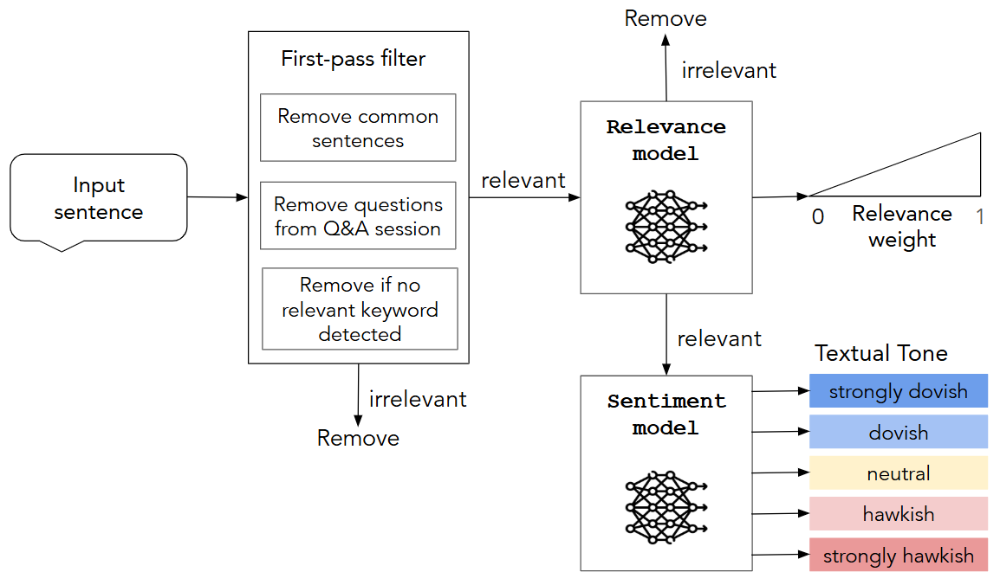
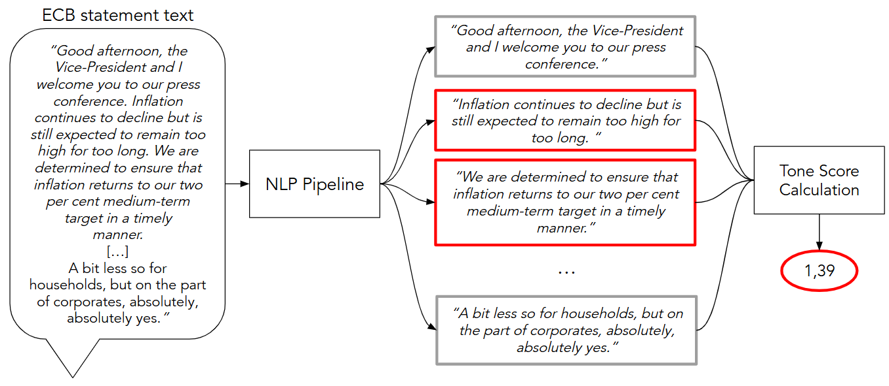

Abstract
We develop and validate an NLP pipeline to compute the textual tone score of monetary policy communications, quantifying the degree of hawkishness or dovishness. The pipeline leverages a RoBERTa-large Transformer model, and it is trained and evaluated on a sample of ECB press conferences following the policy rate announcement from 2000 to 2025. We provide a twofold validation of the resulting index. First, from a macroeconomic perspective, the tone index captures the underlying economic stance, mitigating omitted-variable bias in the estimated relationship between policy rates and inflation. Second, from a macro-financial perspective, we isolate the surprise component of press conference communication and show that interest rates increase in response to hawkish communication surprises.

Methodology
We construct a textual tone index that quantifies the degree of hawkishness or dovishness in ECB monetary policy communication. The methodology relies on a structured NLP pipeline applied to the full transcripts of ECB press conferences held after policy rate announcements between 2000 and 2025. The NLP pipeline combines rule-based pre-processing and Transformer-based classification models to extract sentence-level information and aggregate it into a document-level tone score.
The pipeline consists of four main steps: sentence filtering, relevance classification, sentiment classification, and aggregation into a textual tone score index.

Step 1: First-Pass Relevance Filtering
The first step consists of a pre-processing stage aimed at removing economically irrelevant sentences from the raw press conference transcripts, such as greetings, procedural statements, and journalists' questions.
Step 2: Relevance Classification Model
In the second step, a relevance classification model identifies whether each remaining sentence is directly related to monetary policy. This model is trained using manually annotated data and distinguishes sentences that discuss policy decisions or instruments from those referring to broader economic conditions.
Step 3: Sentiment Classification Model
In the third step, the sentences classified as relevant are processed by a sentiment classification model. The model assigns each sentence one of five ordered sentiment labels representing the tone of the communication: strongly dovish, dovish, neutral, hawkish, and strongly hawkish.
Step 4: Textual Tone Score Index Computation
In the final step of the pipeline, sentence-level predictions are aggregated to compute a single textual tone score for each press conference.
The tone score for press conference \(i\) is computed as a weighted average of the sentence-level tone predictions:
\[ t_i = \frac{1}{N_i} \sum_{j=1}^{N_i} w_{j}^{\mathrm{rel}} \cdot \mathrm{sign}(\hat{y}_{j}) \cdot \hat{y}_{j}^{2} \]
where \(\hat{y}_j\) represents the sentiment score assigned to sentence \(j\), \(w_j^{rel}\) denotes the relevance weight associated with the sentence, and \(N_i\) is the total number of sentences in press conference \(i\).
The resulting index summarizes the overall tone of the communication and produces a time series tracking the evolution of ECB monetary policy stance over time.
